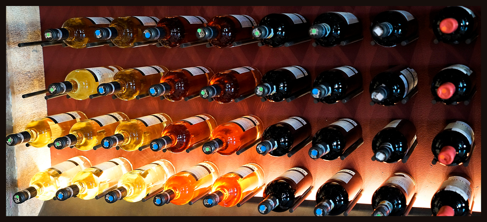

The Beginning
Our family has been engaged in winemaking since the 18th century when the first grape bushes were planted in the Napa Valley by our ancestors.

Our family has been engaged in winemaking since the 18th century when the first grape bushes were planted in the Napa Valley by our ancestors.
Our home-based winery in California became a small, family-owned business, that supplied wine for connoisseurs of this amazing drink.
After the Second World War, we adopted the experience of European winemakers and began to use new technologies in our wine-making processes.
We used to sell our wines only wine only in California. But since 2010, we have been shipping our bottles to other American states and even other countries.